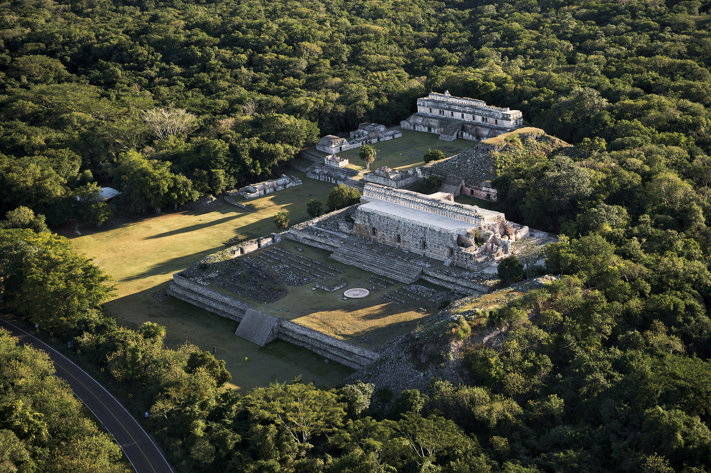

Kabah
Santa Elena, Yucatán
Kabáh es un yacimiento arqueológico maya, ubicado en el municipio de Santa Elena,
en el estado de Yucatán, México, al sureste de Uxmal que forma parte de la denominada ruta Puuc.
El nombre de "Kabah", o "Kabaah", probablemente proviene del maya antiguo y significa "mano dura".
Este es un nombre precolombino, mencionado en crónicas mayas.
Un nombre alterno es "Kabahuacan", o "Serpiente Real en la Mano".
Costo por accesso: Si